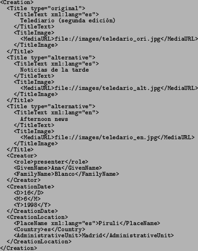

Next: The Object Management Group's Up: Metadata and Meta Objects Previous: XML and XML Schema
The Moving Picture Experts Group (MPEG) is a working group of ISO/IEC in charge of the development of international standards for compression, decompression, processing, and coded representation of moving pictures, audio and their combination.
So far MPEG has produced (or is about to produce) the following standards:
The MPEG-7 standard [Manjunath et al., 2002,Martínez, 2002] also known as "Multimedia Content Description Interface" aims at providing standardized core technologies allowing description of audiovisual data content in multimedia environments. In order to achieve this broad goal, MPEG-7 has standardized:
Data: Data is audio-visual information that will be described using MPEG-7, regardless of storage, coding, display, transmission, medium, or technology.
Feature: A Feature is a distinctive characteristic of the data which signifies something to somebody.
Descriptor: A Descriptor (D) is a representation of a Feature. A Descriptor defines the syntax and the semantics of the Feature representation.
Descriptor Value: A Descriptor Value is an instantiation of a Descriptor for a given data set (or subset thereof).
Description Scheme: A Description Scheme (DS) specifies the structure and semantics of the relationships between its components, which may be both Descriptors and Description Schemes.
Description: A Description consists of a DS (structure) and the set of Descriptor Values (instantiations) that describe the Data.
Coded Description: A Coded Description is a Description that has been encoded to fulfil relevant requirements such as compression efficiency, error resilience, random access, etc.
Description Definition Language: The Description Definition Language (DDL) is a language that allows the creation of new Description Schemes and, possibly, Descriptors. It also allows the extension and modification of existing Description Schemes.
The main tools used to implement MPEG-7 descriptions are the Description Definition Language (DDL), Description Schemes (DSs), and Descriptors (Ds). Descriptors bind a feature to a set of values. Description Schemes are models of the multimedia objects and of the universes that they represent e.g. the data model of the description. They specify the types of the descriptors that can be used in a given description, and the relationships between these descriptors or between other Description Schemes.
In this context the DDL defines the syntactic rules to express descriptions
schemes and their interpretation. MPEG-7's DDL is based on an extension
of W3s XML-Schema. However, the DDL is not a modeling language such
as UML. The DDL is rather to be used to represent the result of modeling,
i.e. DS and Ds. Here is an example of an MPEG-7 definition of an image:

The Experimental Model (XM) software is the simulation platform for the MPEG-7 descriptors (Ds), description schemes (DSs), coding schemes (CSs), and description definition language (DDL). Besides the normative components, the simulation platform needs also some non-normative components, essentially to execute some procedural code to be executed on the data structures. The data structures and the procedural code together form the applications. The XM applications are divided in two types: the server applications and the client applications.
The server applications are used to extract the descriptor data from the media data. The extracted descriptor data is coded and written to an MPEG-7 bit stream. The client application performs the search in the MPEG-7 coded database, by computing the distance between the query descriptor and all reference descriptor of the database. Therefore, one descriptor, the query descriptor, is extracted in the same way as in the server application except that the coding is not performed. The reference descriptors are all extracted from the MPEG-7 bit stream.
The truth is that in its current state the Experimental Model is far from useful due to its complexity, lack of completeness and mixed approaches. It is our opinion that more efforts should be put into it. As a matter of fact, a standard such as MPEG7 would benefit from being an extensible software framework instead of just a set of tools and definitions.
2004-10-18